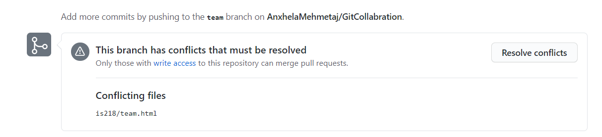
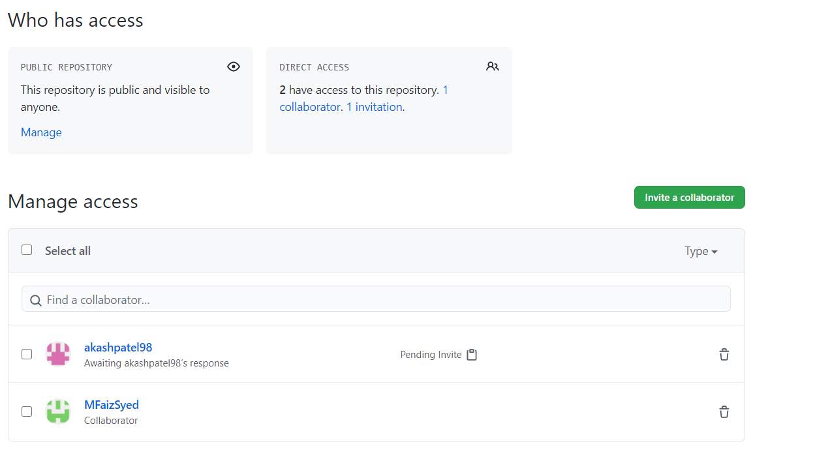

Difference between Git Clone and Git Fork
Since first you need to fork before cloning, although forking does not come as a strict pre-step for cloning. People of an organization working on a repository do not generally fork the repository. We have created this tutorial just to focus on the difference and make you clear about these two concepts viz. Git Cloning and Git Forking.
The fork is mostly used to propose any changes to the original project or create our new ideas for the project by fork and cloning the original project to our own scope as a starting point.
How can you modify/ contribute to the forked repository?
Here the Git clone comes into the action. You have to bring the forked code to your local environment to contribute to it.
Why we need Fork?
You may don’t have the write permission to work directly on the main repository. (Mostly this model is used for open source projects). If everyone clones and directly work on that main project repository/ branch then it’ll be very hard to manage.
Fork Example

Git Pull Request
- Create a new dev branch
- Fork the Repository
- Clone the Repository
- Create a New Branch
- Make Changes Locally
- Update Local Repository
- Create Pull Request Read More
Merge Conflict
Version control systems are all about managing contributions between multiple distributed authors ( usually developers ). Sometimes multiple developers may try to edit the same content. If Developer A tries to edit code that Developer B is editing a conflict may occur. To alleviate the occurrence of conflicts developers will work in separate isolated branches. The git merge command's primary responsibility is to combine separate branches and resolve any conflicting edits.
Resolve Merge Conflict
When you create a pull request Bitbucket automatically compares the source with your update and the destination with the original code. If anyone else has made changes in the destination to the same code you touched, we'll notify you of conflicts when you attempt to merge. When you have merge conflicts, you can't click the Merge button from the pull request to merge. To resolve these conflicts, you pull the changes to your local repository and fix them there. Resolving the conflict between Git branches
These steps include details for resolving conflicts between two branches in a Git repository. You'll see references to these placeholders:
- The directory to the forked repository as <repo_directory>
- The destination branch as <destination_branch>
- The source branch as <feature_branch>
- The file with resolved conflicts as <filename>
Adding a collaborator to a Github Repo
IT projects are often confidential and access to the code should be provided only to the individuals who are involved in the project. With this being said, in GitHub, individuals are allowed to add collaborators for a project in a private repository. Here, adding collaborators in a private repository make the code accessible only for the individuals who are involved in the project. Therefore, I will be providing a detailed procedure for adding collaborators in a private repository in GitHub.
